LOS ANGELES / LAS VEGAS / SEDONA 2027
ロサンゼルス
ラスベガス
セドナ
2027年1月6日（水）— 1月12日（火）／ 5組 11人
岩田さん・田邊家・石原さん・川野さん・たくへいさん
はじめに
5組11人で、ロサンゼルス → ラスベガス → セドナ を回ります。目的はCES 2027（1/8・1/9のラスベガス）。日程を合わせるのは下の4回だけで、あとはそれぞれ好きに動く旅です。
合わせるのは、この4回だけ
- 1/6 水ロサンゼルスに着く便は組ごと。着く日だけ全員同じ（日本を昼〜夕に出ると、同じ日の朝に着きます）
- 1/8 金 朝ロサンゼルス → ラスベガス飛行機1時間10分（車なら約4時間）。この日からラスベガス泊
- 1/10 日 朝ラスベガス → セドナフェニックスまで飛行機1時間5分＋車2時間。着いたら時計を1時間進めます
- 1/11 月 夕セドナ → ロサンゼルスフェニックスまで車2時間＋飛行機1時間25分。時計は1時間戻します。この夜は空港そばに泊まります
- 1/12 火〜ロサンゼルス → 日本組ごとここは合わせません。ロス発は朝〜昼の便が多く、約11〜12時間で日本着は翌日の午後。延泊するのも自由です
この旅のメイン：CES 2027
1/8・1/9 のラスベガスは、CES 2027 の会期中です。世界最大のテクノロジー見本市で、この旅の目的です。登録は11/30までなら$149、12/1から$349に上がります（2026年9月時点の公式表示）。18歳未満は入場できません。今回はじょうせいさん（17歳）とゆらいさん（11歳）が入れないので、この2人は1/8・1/9 を別の予定にしてください。回り方・会場・段取りは上の「CES 2027」のタブに全部書いてあります。
参加する5組
田邊家
4名
田邊さん・みきこさん・じょうせいさん（17歳）・ゆらいさん（11歳）
川野さん
2名
川野さん・社員の方（名前はこれから）
いちばん急ぐのはラスベガスの宿です。1/8・1/9 は世界最大の見本市（CES）の会期中で、ラスベガスの全市が満室になります。値段も通常の3〜5倍（1泊$500〜1,000超）。ここだけは、ほかより先に押さえてください。
宿の取り方（共通）
- 米国のホテルは「1部屋いくら」。2人でも1人でも同じ値段のことが多いので、2人なら1部屋で十分です。4人だと「2クイーンベッド」の部屋（ベッド2つ）を選べば1部屋で泊まれます。
- リゾートフィーとデポジットに注意。ラスベガスは宿泊料のほかに1泊$40〜60のリゾートフィーがかかり、チェックイン時にカードで$50〜100／日のデポジットを押さえられます（使わなければ数日で戻ります）。
- 無料キャンセル可で押さえておく。人数や日程が未定でも、キャンセル無料の条件なら先に部屋を確保できます。CES週のラスベガスは待つほど高くなります。
- セドナは夜が暗い。街灯が少なく（星空を守るため）、夜の運転は慣れが必要です。日が暗くなる前に宿に入る日程にしておくと安心です。
みんなでごはん（希望）
着いた日（1/6 水）の夜と、ラスベガス（1/8 金）の夜は、みんなで食事ができたらと思っています。決まりではないので、行ける人だけで大丈夫です。日とお店が決まったら、ここと「日ごとの動き」の表に出します。
- 11人だと予約が要ります。米国のお店は6人以上から予約を受けるところが多く、当日に11人で入れるお店はほとんどありません。行くと決めたら12月のうちに予約を取ります。
- ラスベガスの夜はとくに混みます。1/8・1/9 はCESの会期中で、有名店は予約で埋まります。ホテルのビュッフェなら大人数でも入りやすく、時間もずらせます。
- 支払いは1人ずつ分けられます。席に着いたときに「Can we split the check?（お会計を分けられますか）」と伝えておくと、店の端末で人数分に分けてくれます。
- 大人数だとチップが先に入っています。6人以上は18〜20%の「gratuity」が伝票に最初から足されていることが多いので、二重に払わないよう伝票を確かめてください。
やること
チェックはこの端末に保存されます（他の人には見えません）。—
決めておきたい約束
- 連絡はLINEのグループ1つ。会社が違う人・ご家族がいるので、社内のチャットは使いません。グループを1つ作って、米国で使う電話番号もそこに。
- お金は組ごとに別会計。便・宿・レンタカーは各組が自分で予約して自分で払う形が、いちばんもめません。食事は店の端末で1人ずつに分けて払えます（「Can we split the check?」）。
- 子どもの体力に合わせる。ディズニーもセドナも1日1万歩を超えます。1日に大きな予定を2つ入れると、だいたい後半がつぶれます。
- 写真はあとでまとめて共有。帰国後にアルバムを1つ作って、各組が入れる形に（旅行中は各自好きに撮る）。
CES 2027
ラスベガスに泊まる1/8・1/9 は、世界最大のテクノロジー見本市「CES 2027」の会期中です（会期は1月6日〜9日・2026年10月25日にCES公式サイトで確認）。行く人だけ読んでください。
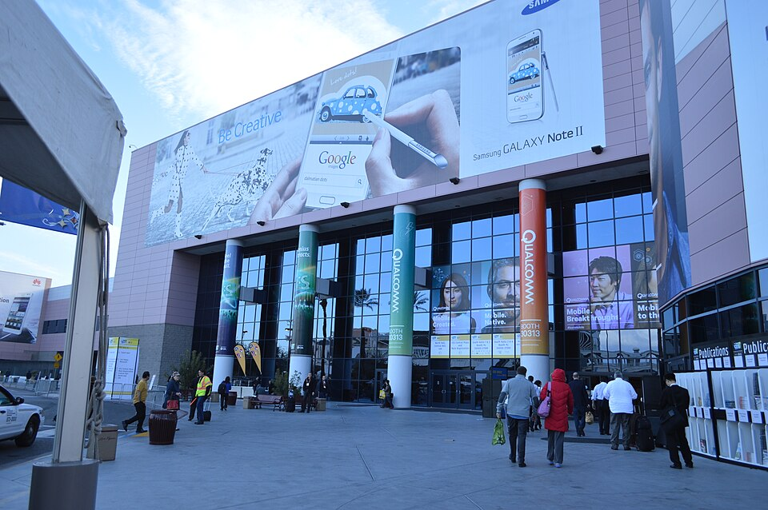
ラスベガス・コンベンションセンター — CESの主会場
18歳未満は入場できません。CESは業界関係者限定の見本市で、家族の同伴も認められていません（当日の例外もなし）。18歳未満は会場に入れません。今回入れないのはじょうせいさん（17歳）とゆらいさん（11歳）の2人です。この2人の1/8・1/9 は、グランドキャニオン日帰りツアー・アドベンチャードーム・水族館などに充ててください（上の「ラスベガス」のタブ）。
どれくらいの規模か
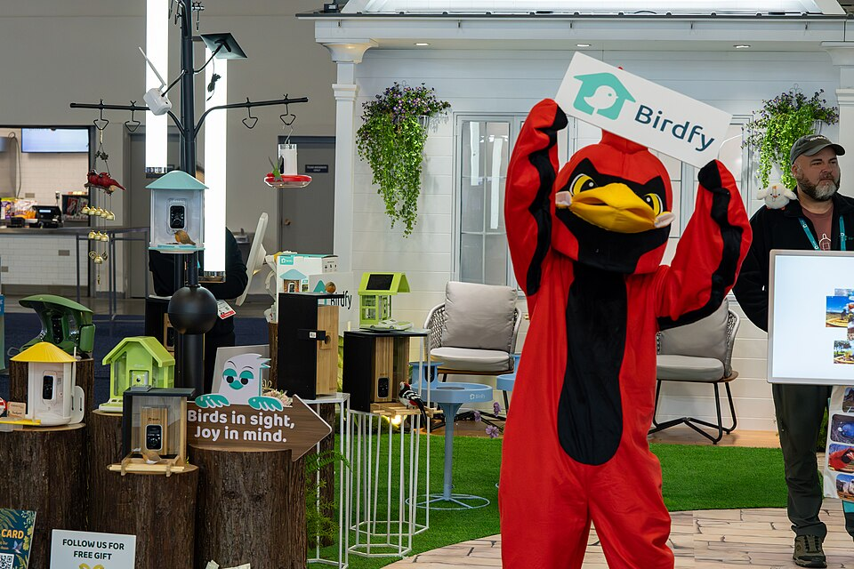
展示会場 — 4,000社超。全部は回れないので、見たい分野を2つまでに絞る
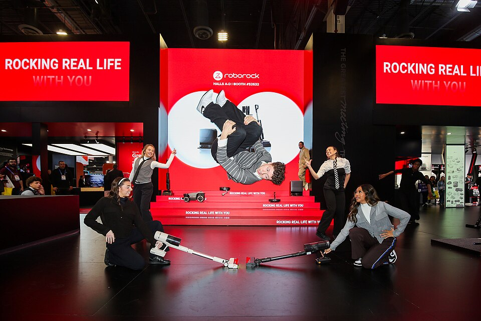
人気のブースには人だかりができます。朝いちばんが狙い目
来場
約14万人
直近の実績（推測です）。世界160か国以上から集まります
出展
4,000社超
大企業からスタートアップまで。全部は絶対に回れません
歩く距離
1日1万5千歩
会場が広いうえ、会場間の移動もあります。スーツより歩ける靴で
会期
1/6（水）〜1/9（土）
田邊さんが行くのは1/8・1/9 の2日。初日は人が最も多い日です
登録（行くと決めたら先に）
- 11/30までなら1人 $149、12/1から $349になります（2026年9月時点の公式表示。申し込む前にCES公式サイトで必ず確認してください）。
- 業界に属していることの証明が必要です。会社のサイト・名刺・LinkedInなどを登録時に出します。1人ずつ、自分の会社の名前で登録してください（人の分を代わりに登録するのは難しい形です）。
- バッジは事前に受け取れます。郵送・空港や主要ホテルの窓口・会場受け取りのどれか。会場受け取りは初日の朝に行列ができるので、前日の夜までに受け取れるとその日がまるごと使えます。
- 公式アプリを入れてバッジを登録。会場の地図・出展社検索・セッションの予約がここからできます。紙の地図より速いです。
- パスポートを持っていく。受付で本人確認を求められることがあります。
会場は大きく3か所
コンベンションセンター（LVCC）
車・家電・AI
最大の会場で、中がさらにWest／Central／Northに分かれます。Westは車とモビリティ、Centralは大手家電、Northはスマートシティなど。ここだけで丸1日
ベネチアン・エキスポ
スタートアップ
新しい会社が1,000社以上集まるEureka Park。日本のスタートアップが集まるブース（JETRO）もここ。初日の午前がいちばん話を聞きやすい
ARIA など（ホテル会場）
講演・商談
基調講演や、広告・メディア関係の会場。招待制の会議もここ
会場の間をどう動くか
- 無料シャトルバスが会場と主要ホテルを結びます。会場間は20〜40分（渋滞するともっと）。これが1日のうちでいちばん時間を食います。
- LVCCの中は地下のトンネル（Vegas Loop）で移動できます。CESの参加者は無料。West〜Central〜Northを数分で移動できるので、歩くより圧倒的に速い。
- モノレールもLVCCに止まります（1日券$15前後）。ストリップのホテルから行くときに使えます。
- 会場をまたぐのは1日1回までと決めておくと、移動で1日が終わるのを防げます。
1日の回り方（例）
例
1日目
スタートアップを見る日
- 09:00
ベネチアン・エキスポへ。Eureka Park（スタートアップ）から回る。朝は人が少なく、相手も疲れていないので話が深い
- 12:00
会場内で軽く食事（行列するので時間をずらす）
- 13:00
日本のブース（JETRO）で情報交換。日本語で話せるので要点を早く掴めます
- 15:00
見たい分野のブースを回る
- 17:00
その日のうちに「持ち帰り1つ」をメモ。記憶は翌日には薄れます
例
2日目
大手と車を見る日
- 09:00
LVCCへ。West Hall（車・モビリティ）から。大きな展示は午前のうちに
- 12:00
Central Hall（大手家電・AI）。人が多いので、見たいブースを先に決めておく
- 15:00
アポを入れてある企業を訪問
- 17:00
振り返り。名刺の裏に「何の会社か・何を話したか」を書き足す
損をしないための段取り
- 見たい分野を2つまでに絞る。全部は回れません。絞らないと「すごかった」だけで終わります。
- 会いたい企業には11〜12月にメールでアポを入れる。出展社リストは11月に公式サイトで公開されます。「日本の○○の会社で、△△を検討している」と1行書くだけで担当者が時間を取ってくれます。当日の飛び込みとは話の深さがまったく違います。
- 名刺は1日20〜30枚。英語面は必須。もらった名刺はその場でメモを書き込むか、写真を撮って記録を。
- 写真は「ブースの看板」と「製品」をセットで。製品だけ撮ると、あとで何の会社か分からなくなります。
- 会場のWi-Fiは繋がりません。人が多すぎるためです。eSIMなど自前の回線を必ず用意してください。
- モバイルバッテリーは必須。地図とアプリで電池が一気に減ります。
- 飲み物と軽く食べるものを持ち込む。会場の食事は行列で、席も空いていません。
- 英語が不安でも大丈夫。スマホの翻訳アプリで足ります。「What problem does this solve?（これは何の問題を解決するんですか）」の1問だけ覚えていけば、あとは相手が話してくれます。
田邊さんがCESにいるのは1/8と1/9の2日間です。一緒に回りたい人は、この2日に合わせてください。
ロサンゼルス
1/6（水）・1/7（木）の2日間と、1/11（月）の夜（空港そばで1泊）、そして1/12（火）以降の帰国。どこへ行くかは組ごとに自由です。料金と所要時間は2026年10月時点の目安（推測です）。行く前に公式サイトで確かめてください。
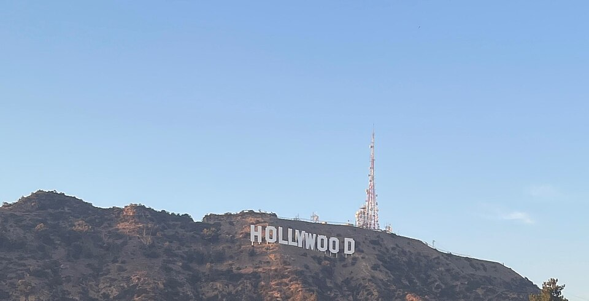
ハリウッドサイン — 丘の上。グリフィス天文台からよく見えます
街の形
とにかく広い
端から端まで車で1時間以上。電車はほとんど使えません。Uber／Lyftかレンタカーが前提です
1月の気候
9〜20℃・晴れ
日中は上着なしでも歩けます。朝晩は冷えるので薄手の上着を1枚
移動のお金
Uber $20〜50
空港→アナハイムで$70前後。7人乗りのUber XLなら荷物が多い家族でも1台で済みます
気をつける場所
夜のダウンタウン
ハリウッド大通りの東側・スキッドロウ周辺は夜に歩かない。車の中に荷物を置いたままにしない（置き引きが多い）
行き方：日本 → ロサンゼルス（1/6）
国際線
1/6（水）／ 約10時間 ／ 各組で予約
昼〜夕
東京（成田・羽田）
カウンターは出発3時間前から
同じ日の朝
ロサンゼルス（LAX）
入国審査に1〜2時間
時差は−17時間。日本の夕方に出ると、同じ日の朝にロスに着きます。到着日が1日まるごと使えるので、午後から動けます。田邊家はZIPAIR（成田14:45発 → ロス07:40着）
帰り方：ロサンゼルス → 日本（1/12 以降）
国際線（帰り）
1/12（火）以降 ／ 約11〜12時間 ／ 各組で予約
朝〜昼
ロサンゼルス（LAX）
国際線は出発3時間前に空港へ。レンタカーを返すならさらに1時間前
翌日の午後
東京（成田・羽田）
1/12 に出ると 1/13 に着きます
帰りは行きより1〜2時間長くかかります（向かい風のため。行き約10時間・帰り約11〜12時間）。田邊家は 1/12 09:40 ロス発 → 1/13 14:25 成田着。帰国日を組ごとにずらすのは自由です。ロスに数日残る、フェニックスから直接帰る、どちらもできます
泊まるところ
ロサンゼルス（1/6・1/7）
$180〜350／泊
ディズニーに行くならアナハイム（パーク徒歩圏はもう少し高い）。観光メインならダウンタウン・サンタモニカ。1月は閑散期で取りやすい
ロス空港そば（1/11）
$150〜250／泊
翌朝の帰国便に備える1泊。空港シャトルが無料のホテルを選ぶと朝が楽（始発の時刻を予約前に確認）
テーマパーク
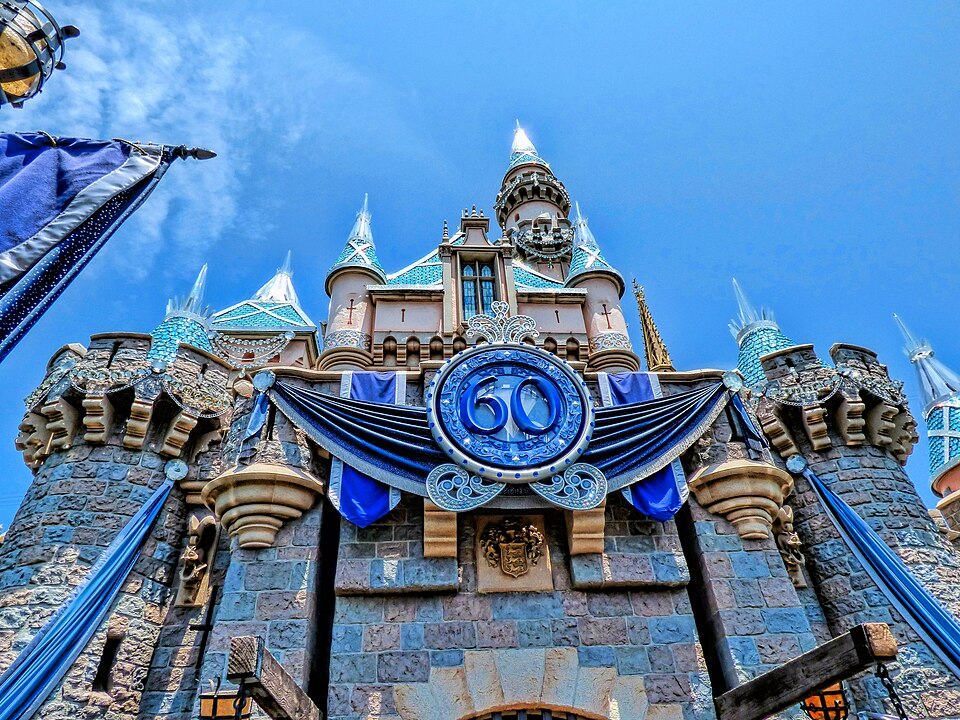
ディズニーランド（アナハイム） — 1月の平日は1年でいちばん空く時期
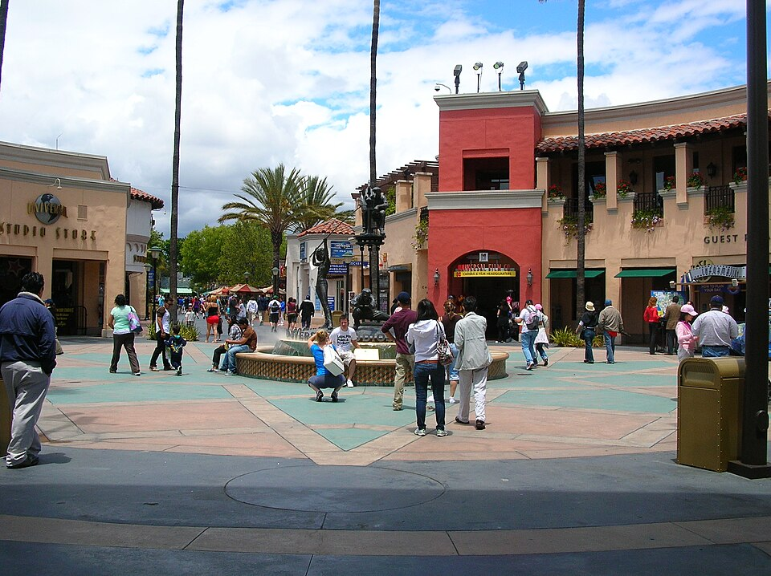
ユニバーサル・スタジオ・ハリウッド — 半日でも回れる大きさ
ディズニーランド・リゾート（アナハイム）日付指定
所要：1パーク1日／2パークなら2日。ディズニーランドと、隣のカリフォルニア・アドベンチャーの2つ。チケットは日付を指定して公式サイトで先に買う形（当日券は売り切れることがあります）。1日券は$110〜210ほどで、空いている日ほど安くなります。1月の平日は1年で最も空く時期で、人気の乗り物でも20〜40分で乗れます。公式アプリを入れると待ち時間・食事の注文・有料の優先乗車（Lightning Lane、1人1日$30前後）が使えます。｜地図
ユニバーサル・スタジオ・ハリウッド
所要：半日〜1日。本物の撮影所をトラムで回る「スタジオツアー」はここだけ。スーパー・ニンテンドー・ワールドとハリー・ポッターのエリアもあります。ディズニーより小さいので半日でも回れます。1日券$109前後。ダウンタウンから車30分。｜地図
街と景色
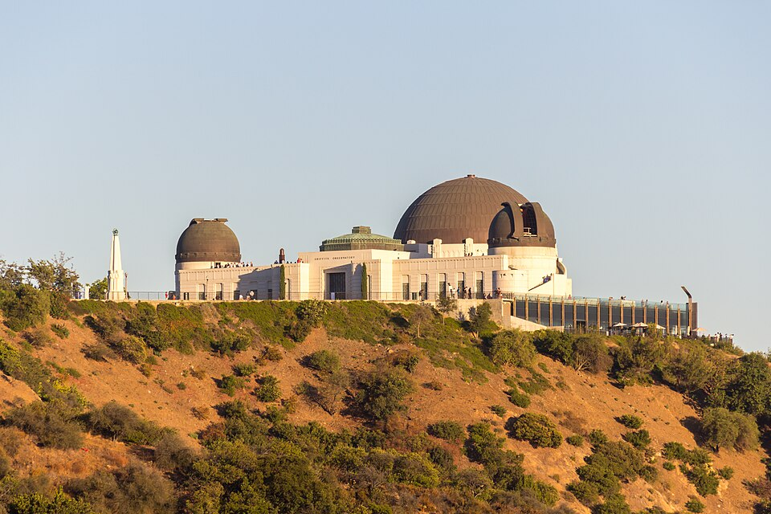
グリフィス天文台 — 夕方に着いて夜景まで粘るのが一番きれい
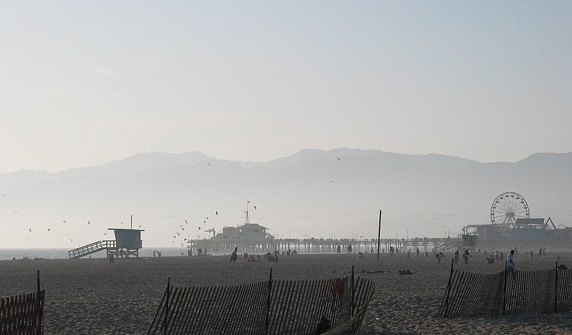
サンタモニカ・ピア — ルート66の終点。1月でも昼は20℃近く
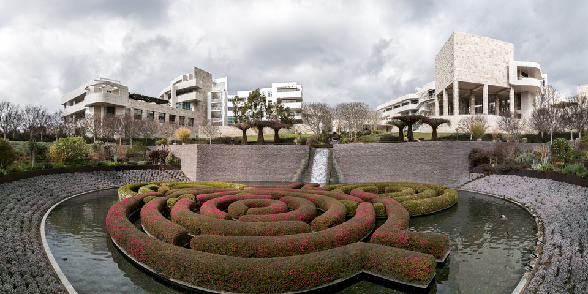
ゲッティ・センター — 丘の上の美術館。入場無料、無料のケーブルカーで登ります
グリフィス天文台
所要：1〜2時間・入場無料。丘の上から街の全景とハリウッドサインが見えます。夕方に着いて、暗くなる夜景まで粘るのが一番きれい。駐車場は有料（1時間$10前後）でとても混むので、少し下に停めて歩く人も多いです。中のプラネタリウムだけ有料（$10前後）。｜地図
サンタモニカ・ピア／ベニスビーチ
所要：2〜3時間・無料。海に突き出た桟橋に小さな遊園地（観覧車$10前後）。ルート66の終点の看板が記念写真の定番です。隣のベニスビーチまで海沿いを自転車で30分。1月でも昼は20℃近くなので歩きやすい。｜地図
ハリウッド（チャイニーズ・シアター周辺）
所要：1〜2時間・無料。歩道に星が並ぶウォーク・オブ・フェイムと、手形のある劇場前。見るだけなら1時間で十分です。着ぐるみの人に写真を撮られるとチップを求められるので、撮らないなら目を合わせないこと。｜地図
ゲッティ・センター
所要：2〜3時間・入場無料（駐車$25前後）。丘の上の美術館。建物と庭と景色が目当てでも行く価値があります。モネやゴッホもあります。無料のケーブルカーで登ります。｜地図
買い物と食事
シタデル・アウトレット
ダウンタウンから車15分。ロス市内でいちばん行きやすいアウトレット。1月は年明けのセール中。｜地図
イン・アンド・アウト・バーガー
カリフォルニアだけのハンバーガー店。$10前後で食べられて、空港の近くにもあります。到着日の最初の食事はここ、という人が多い定番です。｜地図
グランド・セントラル・マーケット
ダウンタウンの屋内市場。タコス・寿司・中華・カフェが並んでいて、バラバラに好きなものを買って同じ席で食べられます。人数が多いときに便利。｜地図
- 1日に大きな予定は1つ。移動に時間がかかるので、「ディズニー1日」「ユニバ＋天文台」くらいが現実的です。
- 駐車場は有料が普通。テーマパーク$35前後、街中$10〜30。停める前に料金表を見てください。
- ガソリンはカリフォルニアが一番高い。ラスベガスやアリゾナのほうが安いので、レンタカーの返却前の給油は空港の手前で。
この街での流れ（例）
自分の組の動きを決めるときの下敷きです。合わせても、ずらしても大丈夫です。
1日目
1/6（水）
日本発 → 同じ日の朝にロサンゼルス
- 朝
ロサンゼルス着。入国審査に1〜2時間。レンタカーかUberでホテルへ
- 午後
時差ぼけ対策で外に出て光を浴びる。ディズニー・サンタモニカ・ショッピングなど軽めに
- 20時
眠くても夕方まで起きて、現地時間の20時に寝る。これで翌日から体が合います
2日目
1/7（木）
ロサンゼルスで1日
7日目
1/12（火）以降
帰国（組ごとに）
ラスベガス
1/8（金）・1/9（土）の2日間。CESの会期中です。CESは18歳以上しか入れないので、じょうせいさん（17歳）とゆらいさん（11歳）は別の予定になります。料金と所要時間は2026年10月時点の目安（推測です）。行く前に公式サイトで確かめてください。
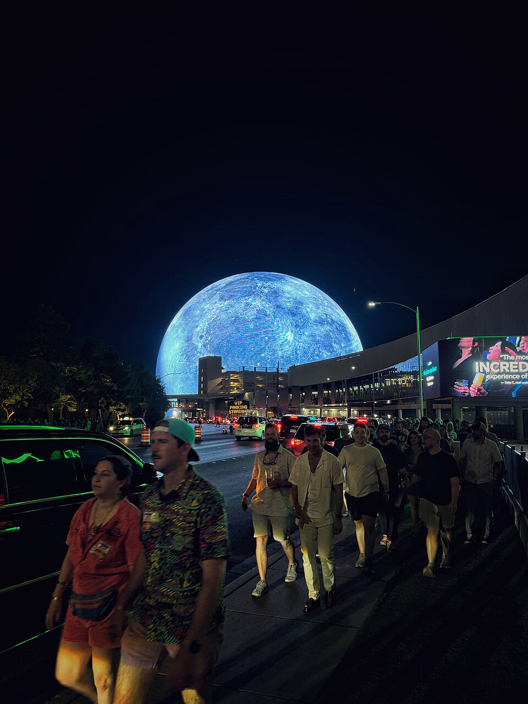
Sphere — 外側全面が映像になる球体
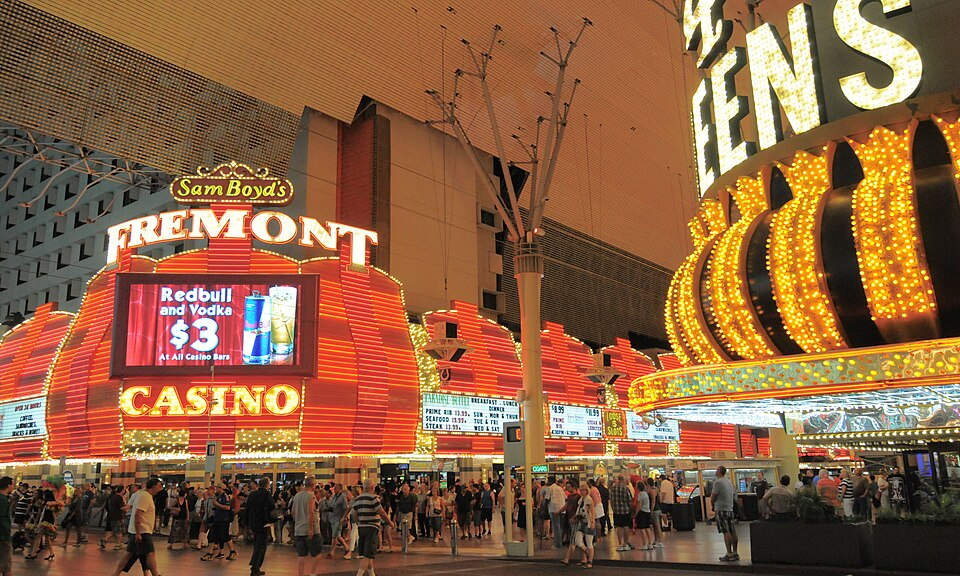
フリーモントストリート — 天井一面が電飾のアーケード
街の形
6kmの一本道
「ストリップ」という大通りに大型ホテルが並びます。隣のホテルまで歩くと15〜20分（建物が大きいので見た目よりずっと遠い）
移動
モノレール／Uber
モノレール1回$6前後・1日券$15前後。ホテル間の無料トラムもあります。CES週はUberが高騰し、待ちも長い
お子さん
カジノは通るだけ
18歳未満はカジノの中で立ち止まれません（通り抜けは可）。ホテルのロビーからエレベーターへは通れるので心配は要りません
1月の夜
3〜5℃
昼は14℃でも、夜の外歩きは寒い。噴水やイルミを見るなら上着は必須
行き方：ロサンゼルス → ラスベガス（1/8 朝）
米国内 ①
1/8（金）朝 ／ 約1時間10分 ／ 各組で予約
朝
ロサンゼルス（LAX／SNA）
アナハイムに泊まるならSNA（車20分）が近い
—
ラスベガス（LAS）
空港からストリップまで車15分
直行便：Southwest ／ Spirit ／ Frontier ／ Delta など。車で行くと約4時間（砂漠の一本道。景色は良いが、CES週は渋滞する）
泊まるところ
ラスベガスだけは今すぐ押さえてください。1/8・1/9 はCESの会期中で、ラスベガスの全市が満室になります（通常の3〜5倍・1泊$500〜1,000超）。無料キャンセル可の条件なら、人数や日程が未定でも仮押さえできます。
ラスベガス（1/8・1/9）
$500〜1,000超／泊
CES週。ストリップ沿いが便利。別にリゾートフィーが1泊$40〜60かかります（宿泊料に含まれていない追加料金）。駐車場も1日$20〜25
歩いて見るもの（ほとんど無料）
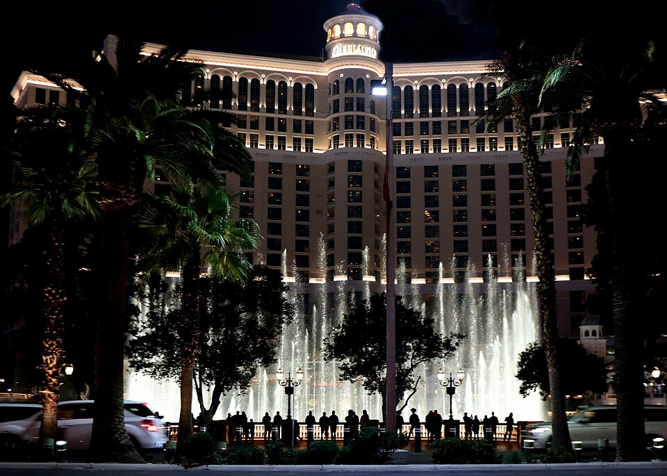
ベラージオの噴水 — 夜は15分おき、音楽に合わせて上がります
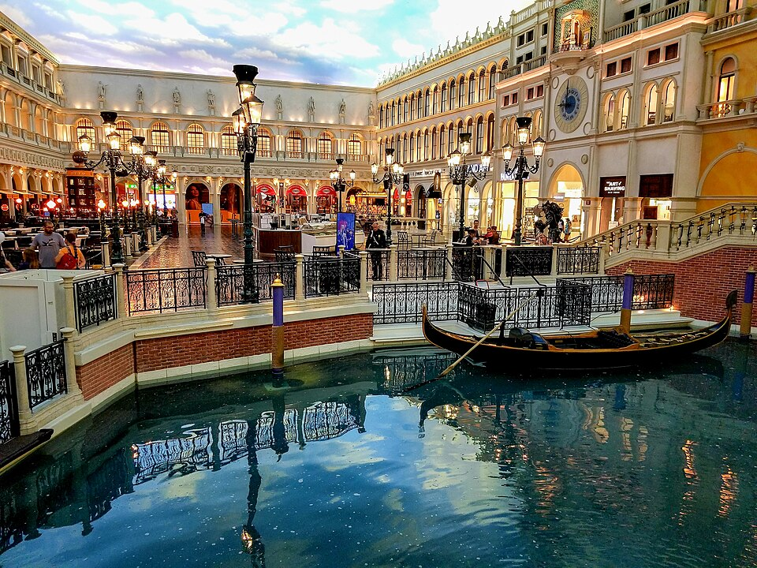
ベネチアン — 屋内に運河。天井が空に見えるように描かれています
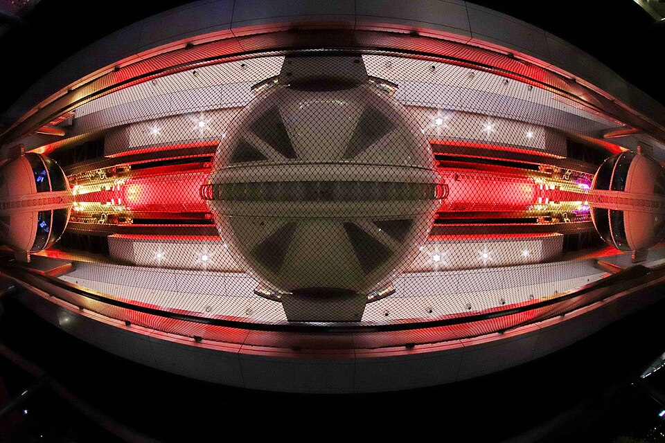
ハイローラー — 高さ167mの大観覧車。1周30分
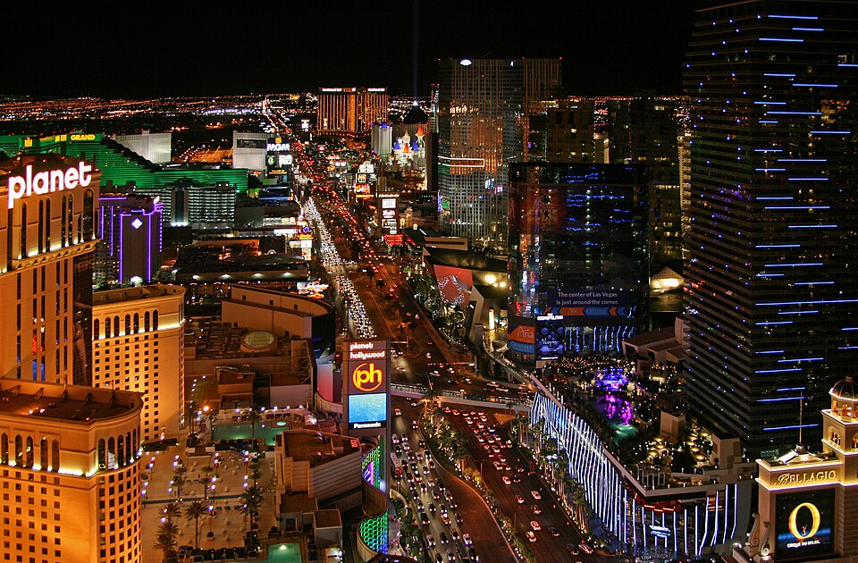
ストリップの夜景 — 端から端まで6km。歩くと見た目より遠い
ベラージオの噴水
無料・1回5分。午後から夜まで15〜30分おき（夜は15分おき）。音楽に合わせて水が上がります。ラスベガスで最初に見るならここ。向かいの歩道橋の上からが見やすい。｜地図
ベネチアンの運河
無料（ゴンドラは$40前後）。ホテルの中が昼間の空の天井になっていて、運河が流れています。CESのスタートアップ会場（Eureka Park）もこのホテルなので、見学ついでに寄れます。｜地図
Sphere（スフィア）
外から見るだけなら無料。高さ112mの球体で、外側全面が巨大な映像になります。中のショーは$100前後から。CES期間は企業の広告が流れるので外観だけでも見もの。｜地図
ハイローラー（大観覧車）
1周30分・$25前後。高さ167m。昼は砂漠と山、夜はストリップの夜景。待ち時間はほぼありません。｜地図
フリーモント・ストリート（ダウンタウン）
無料・所要2時間（ストリップから車15分）。アーケードの天井一面が映像になる古い繁華街。頭上を滑るジップライン（$30前後）が人気。ストリップより安い店が多いので食事にも向きます。｜地図
1日使う（CESに行かない日に）
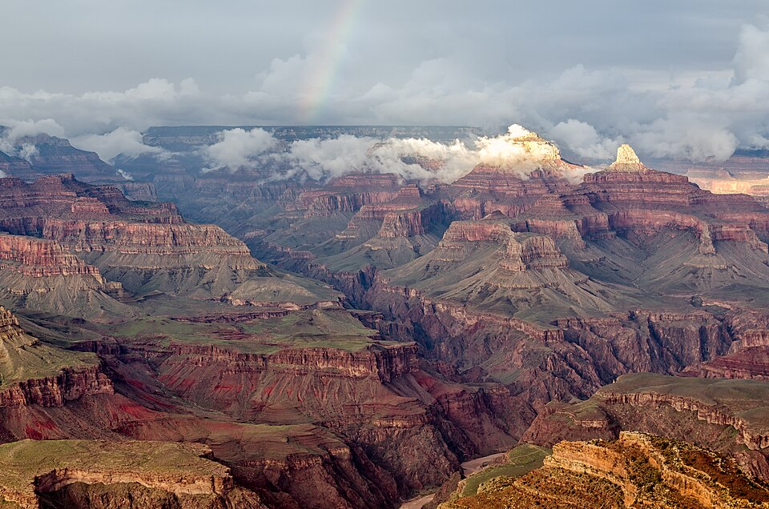
グランドキャニオン — バスツアーで往復14時間、飛行機なら半日
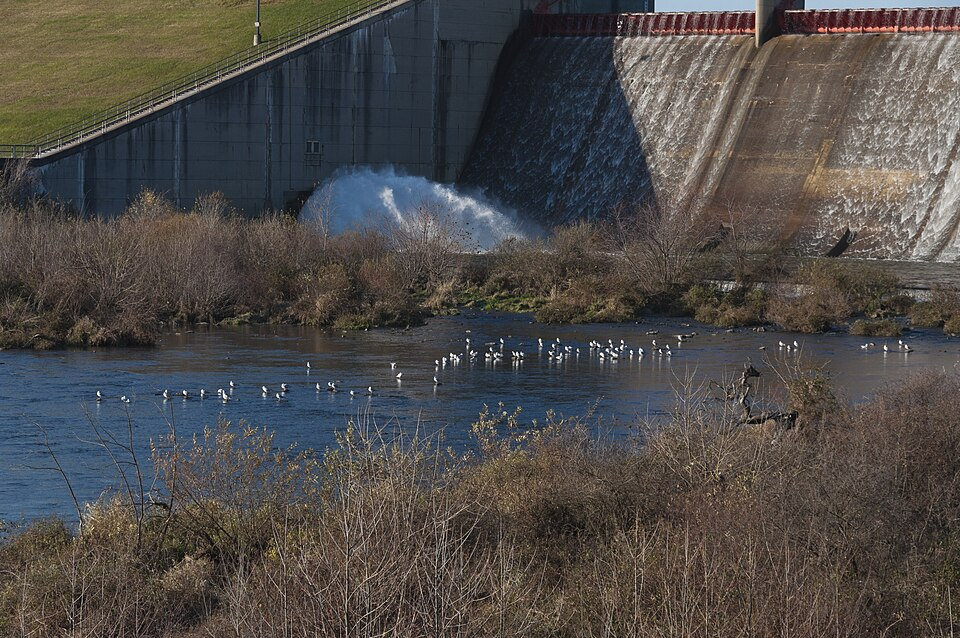
フーバーダム — 車40分。見学だけなら2〜3時間
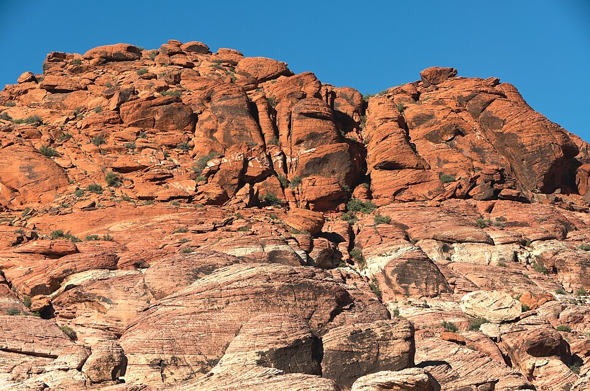
レッドロック・キャニオン — 車30分。1本道を車で回れるので、小さなお子さんでも大丈夫
グランドキャニオン 日帰りツアー要予約
所要：丸1日（朝6〜7時出発・夜8時前後帰着）・$120〜250前後。近いほうの「ウェスト」は車2.5時間、本家の「サウスリム」は車4.5時間。お子さん連れならウェスト、景色で選ぶならサウスリム。ヘリコプターや小型機の遊覧（$300〜500前後）もあります。1月は雪が残り氷点下なので防寒を。｜地図
フーバーダム
所要：半日・車45分。巨大なダムと橋。見学ツアーは$15〜30前後。グランドキャニオンまでは行けないけれど半日空いた、という日に。｜地図
レッドロック・キャニオン
所要：半日・車30分・$20前後／台。車で一周できる赤い岩の景勝地。セドナまで行かなくても赤い岩が見られます。入場は時間予約制のことがあるので公式で確認を。｜地図
お子さん向け
アドベンチャードーム（Circus Circus）
室内の遊園地・乗り放題$50前後。ガラス屋根の下にジェットコースターや観覧車。寒い日・大人がCESの日の過ごし方に。｜地図
シャークリーフ水族館（Mandalay Bay）
所要1〜2時間・$35前後。サメのトンネルがあります。ストリップの南端。｜地図
M&M'S ワールド／コカ・コーラストア
無料で入れます。4階建てのお菓子の店。お土産を買うならここでまとめて。隣同士なので一度に回れます。｜地図
ショーと食事
シルク・ドゥ・ソレイユ要予約
1人$80〜200前後・90分。「O（水のショー）」「KA」「Mystère」「Michael Jackson ONE」など常設が何本もあります。言葉が分からなくても楽しめるのでお子さんにも。CES週は値段が上がり席も埋まるので、行くなら11月のうちに。｜地図
ビュッフェ（Bacchanal など）要予約
1人$70〜90前後。ラスベガス名物。人数が多いときはビュッフェがいちばん楽（好きなものを各自で取れる）。並ぶので予約を。｜地図
- CES週は何もかも高い。ホテルは通常の3〜5倍、ショーもレストランも値上がりします。予約は早いほど安い。
- リゾートフィーと駐車代は別。1泊$40〜60のリゾートフィーがチェックアウト時に足され、駐車場も1日$20〜25かかります。
- 歩く距離を甘く見ない。ホテル1軒が端から端まで500mあります。1日1万5千歩は普通。履き慣れた靴で。
- 水は部屋に持ち込む。ホテルの置き水は有料のことが多い（1本$6など）。コンビニかドラッグストアでまとめ買いを。
この街での流れ（例）
3日目
1/8（金）
朝 ラスベガスへ移動 ／ CES初日
- 朝
飛行機で約1時間10分。早朝便が多いので前夜に精算を済ませておく
- 昼
ホテルへ。チェックインは15〜16時だが荷物は預けられる
- 午後
CESに行く人は会場へ。行かない人はストリップ・ショー・アウトレット
4日目
1/9（土）
ラスベガスで1日
セドナ
1/10（日）・1/11（月）の2日間。車がないと動けない町です（レンタカーはフェニックス空港で借ります）。料金と所要時間は2026年10月時点の目安（推測です）。行く前に公式サイトで確かめてください。
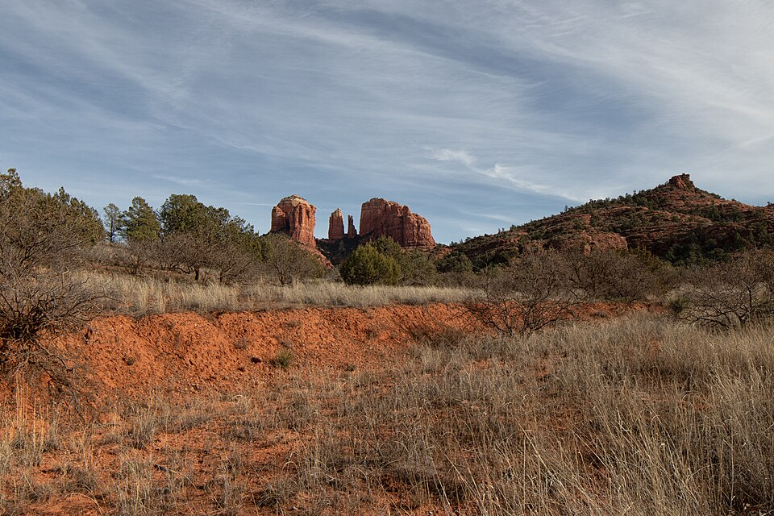
カセドラルロック — セドナを代表する赤い岩
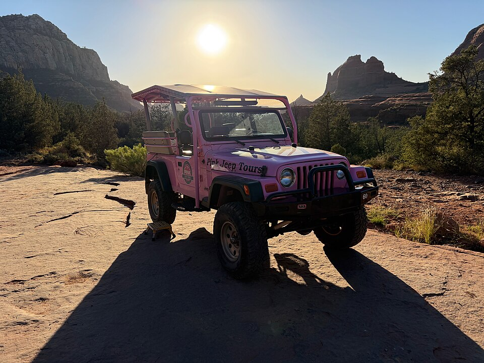
ジープツアー — 岩場をそのまま登っていく
街の形
小さな町・車が必要
人口1万人ほど。お店が並ぶUptownと、安い宿が多いWest Sedonaに分かれています。歩いて回れるのはUptownだけ
1月の気候
−3〜13℃
標高1,350m。朝は氷点下で、たまに雪。昼は日差しで暖かい。日没は17:40ごろ
駐車
Red Rock Pass
自然の中の駐車場は1日$5前後のパスが要ります。売り場の機械か店で買えます（教会・町なかは不要）
行き方
フェニックスから車2時間
セドナに空港（商業便）はありません。途中のモンテズマ・キャッスルに寄れます
行き方：ラスベガス → セドナ（1/10 朝）
米国内 ②
1/10（日）朝 ／ 飛行機1h05m ＋ 車2h ／ 各組で予約
朝
ラスベガス（LAS）
9時前後の便だとセドナに昼過ぎ着
—
フェニックス（PHX）
空港でレンタカー → セドナまで車2時間
セドナに空港（商業便）はありません。フェニックスから車2時間が定番です。途中のモンテズマ・キャッスル（断崖の住居跡）に寄れます。ラスベガスから車で行くと約5時間
帰り方：セドナ → ロサンゼルス（1/11 夕方）
米国内 ③
1/11（月）夕方 ／ 約1時間25分 ／ 各組で予約
夕方
フェニックス（PHX）
レンタカー返却は出発2時間前。給油してから
—
ロサンゼルス（LAX）
空港そばのホテルで1泊 → 翌朝の帰国便へ
田邊家はこの形（1/11にロスへ戻って空港そばで1泊、1/12 09:40発で帰国）。帰国便の日を各組でずらすのは自由です。フェニックスから直接帰る便もあります
泊まるところ
セドナ（1/10・1/11）
$250〜450／泊
小さな町で部屋数が少ない。Uptown（お店が並ぶ中心）か West Sedona（安め・車前提）。赤い岩が見える部屋は値段が上がります
車を降りてすぐ見られるもの
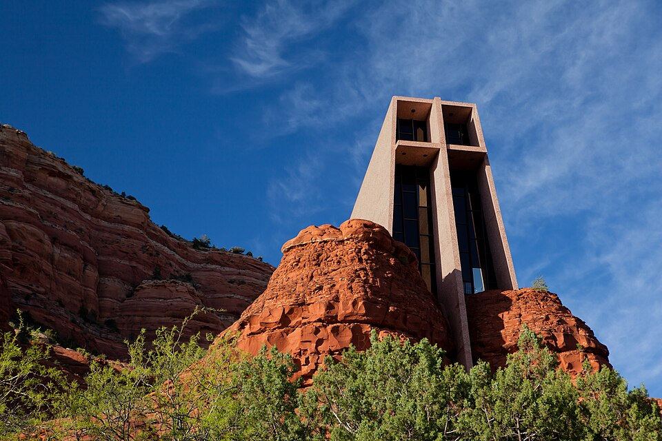
ホーリークロス教会 — 岩にはめ込むように建つ教会。入場無料
ベルロック — 駐車場から5分歩くだけで目の前に
ホーリークロス教会（Chapel of the Holy Cross）
所要30分・入場無料。岩の間に建てられた小さな教会。駐車場から坂を5分なので、歩くのが大変な人でも行けます。中から谷が見渡せます。朝のうちが空いています。｜地図
エアポート・メサ（夕日）
所要1時間・駐車$3前後。町を見下ろす高台。セドナで夕日を見るならここ。日没の30分前には着いておくこと（駐車場が小さくすぐ埋まります）。｜地図
ベルロック
所要30分〜・駐車にRed Rock Pass。鐘の形の岩。登らず下から見るだけでも十分きれい。少しだけ登ると町と岩の両方が見えます。｜地図
カセドラルロック（展望だけなら）
セドナを代表する岩。登るのは急な岩場で片道1時間・かなりきついので、お子さん連れはRed Rock Crossing（川越しに岩を見る場所）から眺めるのがおすすめです（駐車$12前後）。｜地図
体験する
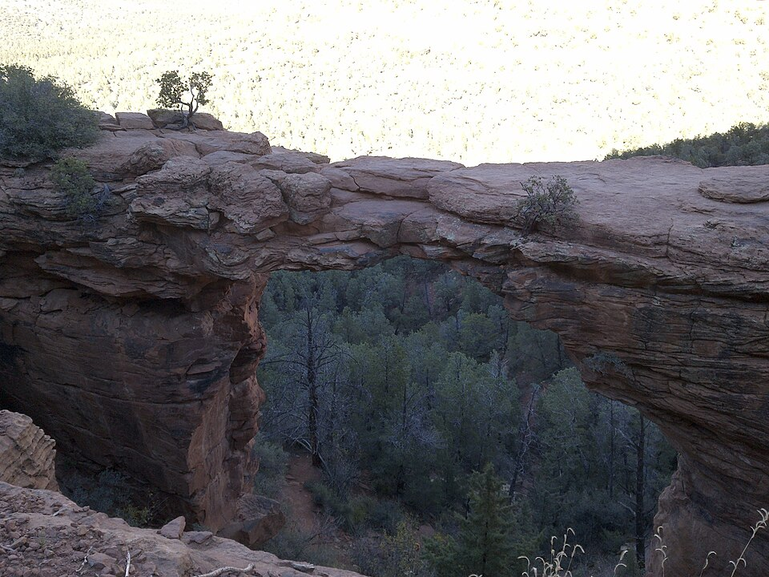
デビルズブリッジ — 岩の橋。往復2〜3時間の歩き
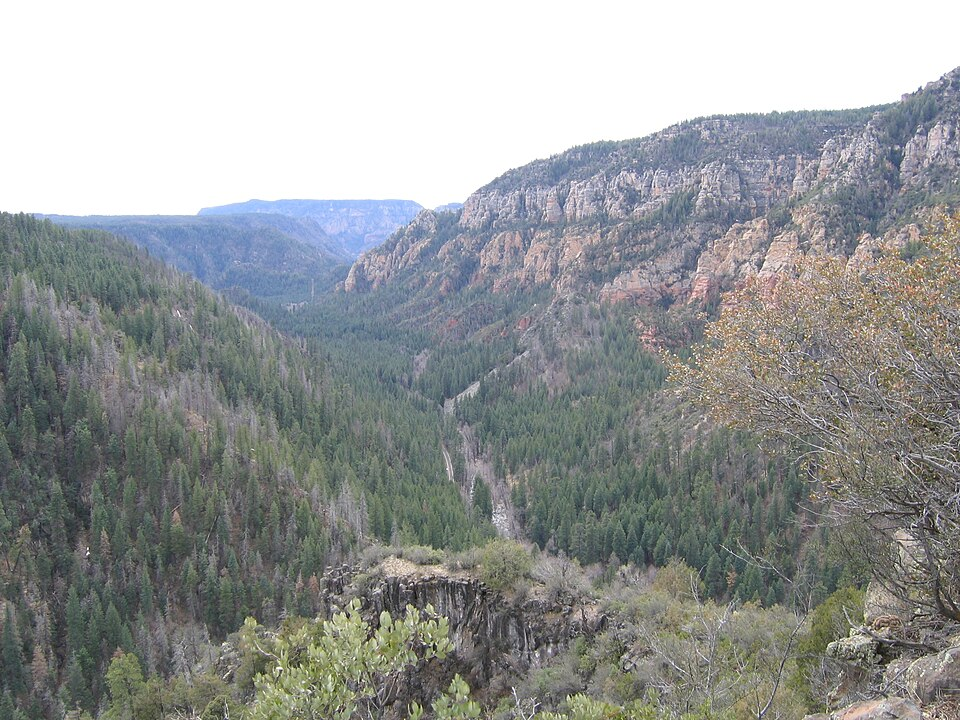
オーク・クリーク・キャニオン — 渓谷ぞいのドライブ
ジープツアー要予約
所要2時間・1人$120前後。四輪駆動で岩場をそのまま登っていきます。セドナでいちばん人気で、冬でも週末は埋まります。小さなお子さんには年齢・身長の制限があるので予約時に確認を。寒いので手袋と帽子を。｜地図
デビルズブリッジ（岩の橋）
往復2〜3時間の山歩き。写真で有名な岩の橋。普通の車では入口まで行けません（悪路）。歩く距離が長いので、体力に自信がある人だけ。｜地図
オーク・クリーク・キャニオン（ドライブ）
所要1〜2時間・無料。セドナから北へ渓谷沿いの道。途中の展望台で停まりながら走ります。フラッグスタッフ（車45分）へ抜ける道でもあります。冬は路面の凍結に注意。｜地図
買い物と食事
トラケパケ（Tlaquepaque）
所要1〜2時間。メキシコの村のような造りのお店の集まり。お土産と食事が一度に済みます。寒い日や雨の日でも歩けるので、予定が崩れたときの受け皿に。｜地図
Uptown（中心の通り）
土産物屋とレストランが並ぶ数百mの通り。セドナで唯一、歩いて回れる場所です。ジープツアーの受付もここに集まっています。｜地図
足を伸ばすなら
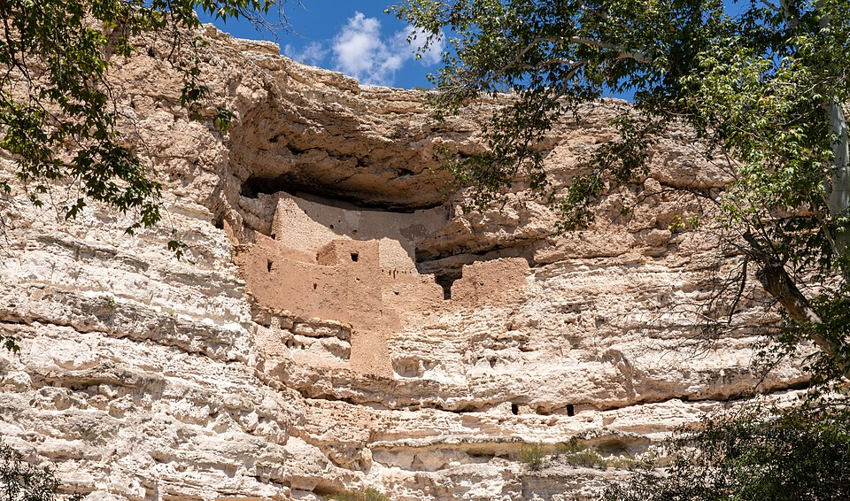
モンテズマ・キャッスル — 断崖の住居跡。車45分、フェニックスからの道中にあります
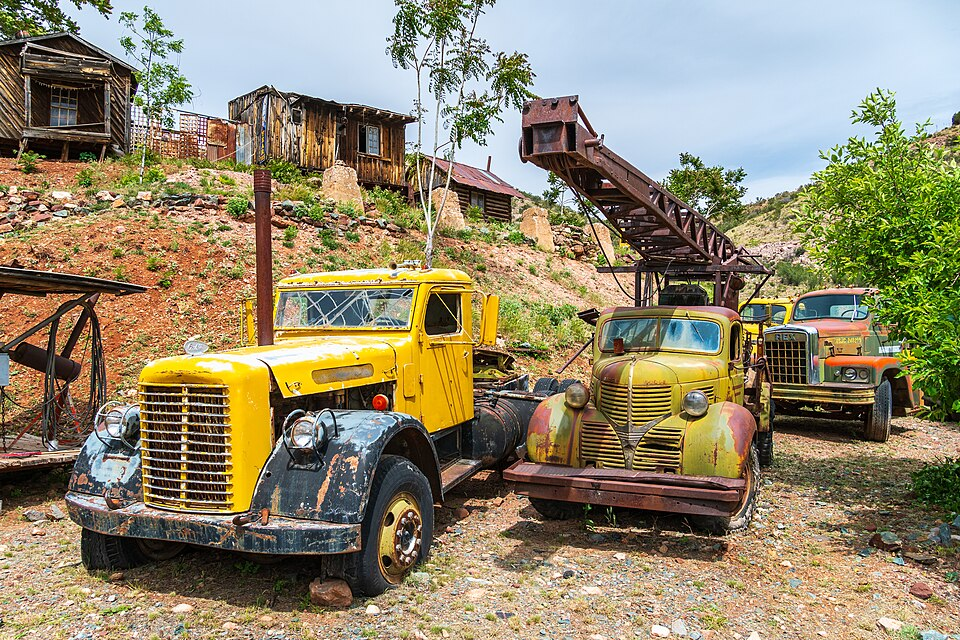
ジェローム — 山の斜面にはりつく元・鉱山町。車1時間
モンテズマ・キャッスル（車45分）
所要30分・$10前後。断崖に作られた800年前の住居跡。フェニックスからセドナへ向かう途中、高速から15分なので、移動日に寄るのが効率的です。｜地図
ジェローム（車1時間）
山の斜面に張り付いた元鉱山町。ゴーストタウンと呼ばれる古い町並みが残っていて、今は小さなお店とワイナリーが入っています。｜地図
グランドキャニオン サウスリム（車2時間）
日帰りなら丸1日。セドナから北へ2時間。ラスベガスから行くより近いので、セドナ滞在を1日延ばして行く手もあります。1月は雪と氷点下。入園$35／台（7日間有効）。｜地図
- 夜は本当に暗い。星空を守るため街灯がほとんどありません。野生動物も出るので、暗くなる前に宿へ戻る予定にしてください。
- 乾燥と標高。標高1,350mで空気が乾いています。水をこまめに飲み、リップと保湿を。普段より疲れやすく感じます。
- 岩は滑ります。砂が浮いた赤い岩は、スニーカーでも滑ります。革靴やサンダルでは登らないこと。
- ガソリンは町で入れておく。セドナを出ると次のスタンドまで距離があります。フェニックスへ戻る前に満タンに。
この街での流れ（例）
5日目
1/10（日）
セドナへ移動（飛行機＋車）
- 朝
ラスベガス発 → フェニックス着（時計を1時間進める）→ レンタカー
- 昼
フェニックスからセドナへ車2時間。途中モンテズマ・キャッスルに寄り道（車から15分）
- 夕
セドナ着。夕暮れの赤い岩が一番きれいな時間。空気が乾いていて夜は冷えます
6日目
1/11（月）
セドナ → 夕方ロスへ戻る
みんなの予定
5組がいつどこにいるかを1枚にまとめた表です。マスを押すと、このページでそのまま書けます（書いたものは全員に見えます）。同じ宿の組がいれば朝ごはんを一緒に、同じ午前に同じ所へ行くなら現地で、というように合わせたいときだけ合わせられます。
あなたの組
選ぶと自分の行に色が付きます。ほかの組のマスを押すと「自分の欄へコピー」が出ます。この端末だけに覚えます。
準備の進み具合
便と宿が取れたらマスを押してください。ほかの組の残りも見えます（押すと全員に見えます）。横にスクロールできます。
| 組 | 行きの便 | 帰りの便 | 米国内の便 | ロスの宿 | ラスベガスの宿 | セドナの宿 | レンタカー | ESTA | 保険 | CES登録 | 進み |
|---|
| 岩田さん2名 | ・ | ・ | ・ | ・ | ・ | ・ | ・ | ・ | ・ | ・ | 0 / 10 |
|---|
| 田邊家4名 | ・ | ・ | ・ | ・ | ・ | ・ | ・ | ・ | ・ | ・ | 0 / 10 |
|---|
| 石原さん2名 | ・ | ・ | ・ | ・ | ・ | ・ | ・ | ・ | ・ | ・ | 0 / 10 |
|---|
| 川野さん2名 | ・ | ・ | ・ | ・ | ・ | ・ | ・ | ・ | ・ | ・ | 0 / 10 |
|---|
| たくへいさん1名 | ・ | ・ | ・ | ・ | ・ | ・ | ・ | ・ | ・ | ・ | 0 / 10 |
|---|
日ごとの動き（午前・午後）
マスを押すと書けます。表は横にスクロールでき、1日ずつ止まります（左端の組の名前は動きません）。いちばん上の「全員同じ」の行は、みんなで合わせる動きなので直せません。
| 組 | 1/6（水） | 1/7（木） | 1/8（金） | 1/9（土） | 1/10（日） | 1/11（月） | 1/12（火） |
|---|
| 午前 | 午後 | 午前 | 午後 | 午前 | 午後 | 午前 | 午後 | 午前 | 午後 | 午前 | 午後 | 午前 | 午後 |
|---|
| 全員同じ変わりません | ロサンゼルス着 | 夜 みんなでごはん（希望・調整中） | — | — | ラスベガスへ移動 | 夜 みんなでごはん（希望・調整中） | — | — | セドナへ移動 | — | — | ロサンゼルスへ戻る | 帰国（組ごと） | — |
|---|
| 岩田さん2名 | 未定 | 未定 | 未定 | 未定 | 未定 | 未定 | 未定 | 未定 | 未定 | 未定 | 未定 | 未定 | 未定 | 未定 |
|---|
| 田邊家4名 | 未定 | 未定 | 未定 | 未定 | 未定 | 未定 | 未定 | 未定 | 未定 | 未定 | 未定 | 未定 | 未定 | 未定 |
|---|
| 石原さん2名 | 未定 | 未定 | 未定 | 未定 | 未定 | 未定 | 未定 | 未定 | 未定 | 未定 | 未定 | 未定 | 未定 | 未定 |
|---|
| 川野さん2名 | 未定 | 未定 | 未定 | 未定 | 未定 | 未定 | 未定 | 未定 | 未定 | 未定 | 未定 | 未定 | 未定 | 未定 |
|---|
| たくへいさん1名 | 未定 | 未定 | 未定 | 未定 | 未定 | 未定 | 未定 | 未定 | 未定 | 未定 | 未定 | 未定 | 未定 | 未定 |
|---|
便・宿・レンタカー
こちらもマスを押すと書けます。横にスクロールできます。
| 組 | 行きの便 | ロスの宿 | ラスベガスの宿 | セドナの宿 | 帰りの便 | レンタカー | CES | ひとこと |
|---|
| 岩田さん2名 | 未定 | 未定 | 未定 | 未定 | 未定 | 未定 | 未定 | 未定 |
|---|
| 田邊家4名 | ZG024 1/6 14:45 成田発 → 07:40 ロス着 | アナハイム | 未定 | 未定 | 1/12 09:40 ロス発 → 1/13 14:25 成田着 | セドナで（PHXで借りてPHXで返す） | 田邊さんのみ 1/8・1/9 | ディズニー2日 → CES2日 → セドナ2日 |
|---|
| 石原さん2名 | 未定 | 未定 | 未定 | 未定 | 未定 | 未定 | 未定 | 未定 |
|---|
| 川野さん2名 | 未定 | 未定 | 未定 | 未定 | 未定 | 未定 | 未定 | 未定 |
|---|
| たくへいさん1名 | 未定 | 未定 | 未定 | 未定 | 未定 | 未定 | 未定 | 未定 |
|---|
パソコンでまとめて書きたいとき
共有の表
Googleスプレッドシート
リンクを知っている人が書き込めます
表のリンクはLINEのグループに貼ってあります。このしおりは誰でも見られるページなので、表のリンクはここには載せていません（リンクがそのまま出ていると、知らない人にも書き込めてしまうため）。見つからないときは幹事に聞いてください。
2つのタブがあります
みんなの予定
便・宿・連絡先
行きと帰りの便、ロス・ラスベガス・セドナで泊まる宿、米国で使う電話番号。自分の組の行だけ書いてください
この日ここに行く
日ごとの行き先
「1/7はディズニー」「1/9はグランドキャニオン」のように1行書きます
- 空欄のままでも大丈夫。決まったところから少しずつ埋めてください。全部決まってから書く必要はありません。
- ほかの組の行は書き換えないでください。見るのは自由です。間違って消したときは、スプレッドシートの「編集履歴」から戻せます。
- パスポート番号・生年月日・カード番号・ESTAの番号は書かないでください。リンクを知っている人なら誰でも読めます。必要なことは、宿の名前と連絡先だけです。
- 着いたら宿の名前を書く。これだけで「今どこ？」のやり取りがなくなります。
- 毎晩、翌日の行き先を1行。決まっていない日は空けたままで構いません。
現地情報・持ち物
時差
ロス −17時間
日本の夕方に出ると同じ日の朝に着きます。アリゾナ（セドナ）は1時間進んで −16時間。1/10にフェニックス着で+1時間、1/11にロスへ戻って−1時間
気温（1月）
ロス 9〜20℃
ラスベガス 3〜14℃／セドナ −3〜13℃（朝は氷点下）。昼と朝晩の差が大きいので、脱ぎ着できる服装で
お金
カードでほぼ全部
現金は$100ほどあれば十分（チップと駐車場用に$1札を多めに）。「日本円で払うか」と聞かれたら必ずドルを選ぶ
チップ
飲食18〜20%
端末に18／20／22%の画面が出るので選ぶだけ。ホテルの清掃は1泊$3〜5、荷物1個$2。ファストフードは不要
通信
eSIMが安くて楽
Ubigi・Airaloなどで1週間$10前後。ホテルのWi-Fiは有料のことがある（リゾートフィーに含まれる場合も）
電源
変換プラグ不要
日本と同じ形（A型）。電圧は120Vで、日本の100V用の機器はほぼそのまま使えます。ドライヤーなど熱を出すものだけ要注意
保険に入らずに行かないこと。米国の医療費は日本と桁が違います（盲腸の手術で数百万円、救急車も有料）。クレジットカード付帯で足りるか（補償額・お子さんが対象に入るか・持病の扱い）を、組ごとに出発前に必ず確認してください。
運転するなら
- 国際運転免許証を持っていく。警察署か運転免許センターで即日・2,350円。日本の免許証も一緒に携帯します。
- チャイルドシートは法律で必要な場合があります。カリフォルニア・アリゾナは8歳未満または身長145cm未満が対象。レンタカー会社で1日$10〜15ほどで借りられます。借りるときに年齢と身長を伝えて確認してください（州ごとに決まりが違います）。
- 右側通行。慣れるまでは右折・左折のたびに「右側」と声に出すと間違えません。赤信号でも右折できます（止まって安全確認してから。禁止の標識がある場所を除く）。
- ガソリンは自分で入れます。カードを機械に差して給油。たまに郵便番号を聞かれるので、その場合はレジで現金払いにすると通ります。
- 返却前に満タンにする。給油せずに返すと割高で請求されます。空港の手前にガソリンスタンドがあります。
- セドナの夜道は暗い。街灯がほとんどなく（星空を守るため）、野生動物も出ます。日が暗くなる前に宿に入る日程が安心です。
- ESTAは公式サイトだけ。検索の上位に代行の偽サイトが出ます。本物は esta.cbp.dhs.gov（$40.27）。承認画面はスクショを残してください。
- 時差ぼけは到着日に決まる。朝に着くので、眠くても夕方まで起きて現地の20時に寝る。これで翌日から体が合います。お子さんは意外と早く慣れます。
- アリゾナだけ時計が1時間進む。夏時間を使わない州なので、冬はロスより1時間先。スマホは自動で変わりますが、待ち合わせの時刻を言うときは「どっちの時間？」を確認。
- 入国審査で聞かれるのは3つ。「目的（観光／会議）」「どこに泊まるか」「何日いるか」。ホテルの名前をすぐ言えるようにしておけば終わります。
- 水は買うより入れる。空港にもホテルにも給水機があります。砂漠なので1日2リットルは飲みます。
- チップは端末で選ぶだけ。18／20／22%が出るので押すだけ。領収書はチップを含んだ総額のものをもらってください。
- ラスベガスのリゾートフィーは別会計。予約画面の金額に入っていないことが多く、チェックアウトで1泊$40〜60が足されます。驚かないように。
- 買い物の消費税は州ごとに違う。表示価格に税が足されます（ネバダ約8%・カリフォルニア約10%・アリゾナ約9%）。表示より高くなるのは普通のことです。
写真の出典
このしおりの写真は Wikimedia Commons の、自由に使える写真（クリエイティブ・コモンズ）です。撮影者とライセンスは下のとおりです。
- Sleeping Beauty Castle (19648733039) — Jennifer Lynn（CC BY 2.0）出典
- Universal Studios Hollywood main entrance courtyard — BrokenSphere（CC BY-SA 3.0）出典
- Griffith Observatory 2012 01 — Photograph by Mike Peel (www.mikepeel.net).（CC BY-SA 4.0）出典
- USA Santa Monica Beach and pier CA — Daniel Schwen（CC BY-SA 2.5）出典
- Hollywood Sign close up — Wiki person that edits（CC BY-SA 4.0）出典
- Getty Center from Central Garden on 2009-02-08 — Robert F. Tobler（CC BY-SA 4.0）出典
- Las Vegas Strip at night, 2012 — Clément Bardot（CC BY-SA 3.0）出典
- Bellagio Fountain - prayitnophotography — Prayitno / Thank you for (12 millions +) view（CC BY 2.0）出典
- Grand Canal Shoppes in Las Vegas — David Shane（CC BY 2.0）出典
- Sphere - Las Vegas (53685825749) — Shelby L. Bell from Omaha, NE, US（CC BY 2.0）出典
- Las Vegas, High Roller, 2018.11.22 (06) — Vahe Martirosyan（CC BY-SA 2.0）出典
- Freemont Street, Las Vegas (39492075460) — Mike McBey（CC BY 2.0）出典
- Grand Canyon Hopi Point with rainbow 2013 — Tuxyso（CC BY-SA 3.0）出典
- Hoover Dam Downstreem 1 — Sixflashphoto（CC BY-SA 4.0）出典
- Red Rock Canyon HDR 1 — Sixflashphoto（CC BY-SA 4.0）出典
- Chapel of the Holy Cross, Sedona, AZ — Matthew P. Del Buono（CC BY-SA 3.0）出典
- Bell Rock, Sedona Arizona — Tedsan64（CC BY-SA 3.0）出典
- Cathedral Rock, Sedona (46131198634) — Shawn Hinsey（CC BY 2.0）出典
- Pink Jeep 2025 — Seasider53（CC BY 4.0）出典
- Devil's Bridge Trail, Sedona, Arizona - panoramio (38) — davidpinter（CC BY 3.0）出典
- Oak Creek Canyon 01 — Postdlf（CC BY-SA 3.0）出典
- Montezuma Castle National Monument Wide — Roman Tokman（CC BY-SA 4.0）出典
- Jerome Ghost Town, Arizona, USA - 2024 7 — dconvertini（CC BY-SA 2.0）出典
- Las Vegas Convention Center entrance, CES2013 — Nobuyuki Kondo（CC BY-SA 2.0）出典
- CES2025 Birdfly — Arthur Petron（CC BY-SA 4.0）出典
- Stadium Dance Crew Performance at CES Consumer Electronics Show Las Vegas for Roborock — Stadium Dance（CC BY-SA 4.0）出典